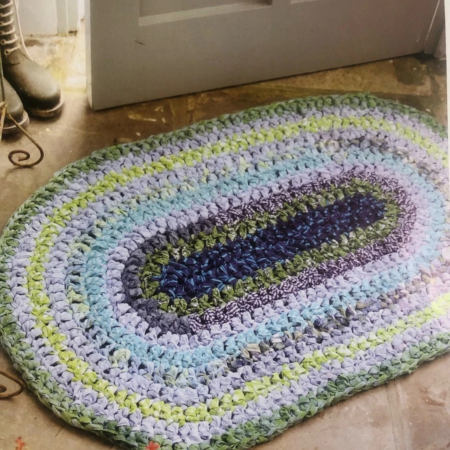
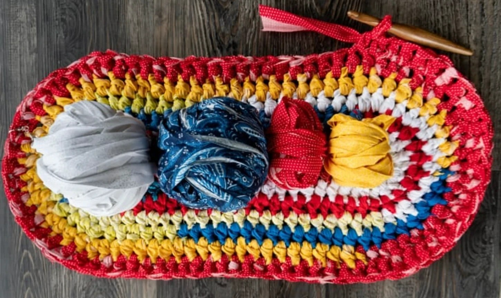
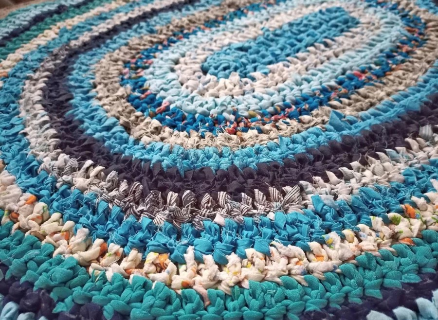
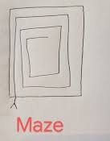
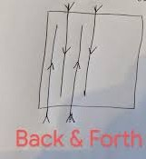
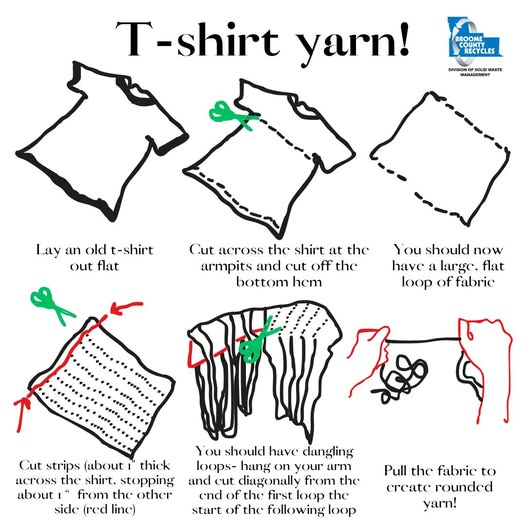
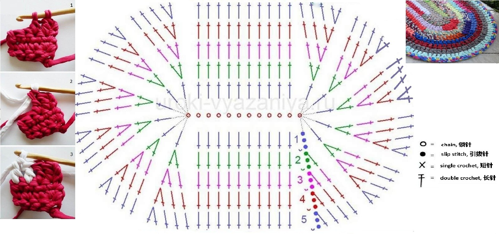
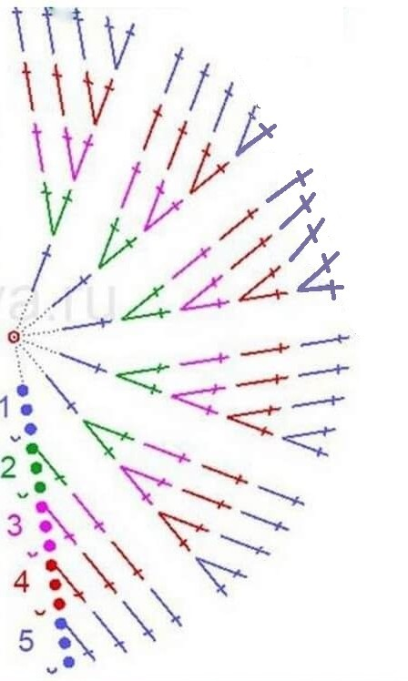

Turn old t-shirts into a beautiful, eco-friendly rug! This tutorial will guide you step by step through the process of creating your own sustainable home decor.



🌿 Ready to start?
There are three ways to cut a t-shirt into yarn. Choose the method that works best for you!




Make a chain of 12 .
Add 3 .
[We will do this in the beginning of each row.]
Work 5
- they all go to the 4th chain from the hook.
Work 1
into each chain to the end of the row.
In the last chain, work 6
[this creates the rounded end].
Now continue along the opposite side of the chain: work 1
into each chain across, starting from the first chain (next to the one where the 6 double crochets were just made). You should make 10
before the end of the row.
Join with a
to the top of the turning chain.
Start new row with 3 , then work 1
in the first stitch.
In each of the following 5 stitches, work 2
[this creates the rounded end].
Now work 1
into the following 10 stitches until you reach the rounded end.
Work 2
(the rounded part).
In each of the following 6 stitches, work 2
[this creates the rounded end].
Join with a
to the top of the turning chain.
Continue working in the same way, following the increase pattern:
Follow the instructions for the round end shown in the figure:

📋 Increase pattern for rounded ends: